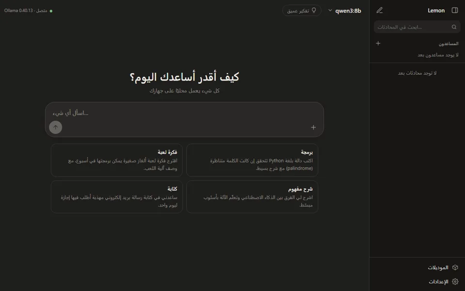
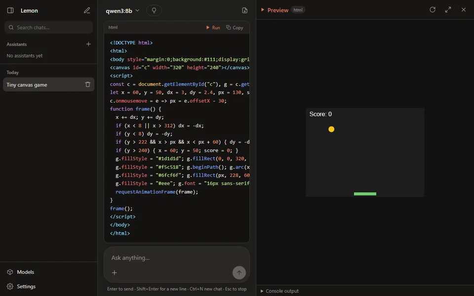

محادثة مألوفة
يظهر الرد أثناء كتابته، مع إيقاف ونسخ وإعادة توليد وتعديل السؤال وإعادة إرساله. والنماذج التي تدعم التفكير لها زر «تفكير عميق».
 Lemon · الذكاء الاصطناعي المحلي
Lemon · الذكاء الاصطناعي المحلي
برنامج ويندوز بواجهة مثل ChatGPT لنماذج ذكاء اصطناعي تعمل على جهازك عبر Ollama. ملف exe واحد صغير، بالعربية والإنجليزية، بلا حساب وبلا سحابة.
مجاني ومفتوح المصدر (MIT) · ويندوز 10 و11 بنظام 64 بت · ملف واحد بلا تثبيت · يحتاج Ollama
 Lemon
Lemon
المميزات
يتحدث Lemon فقط مع خادم Ollama على جهازك. أسئلتك وملفاتك ومحادثاتك لا تغادره.
يظهر الرد أثناء كتابته، مع إيقاف ونسخ وإعادة توليد وتعديل السؤال وإعادة إرساله. والنماذج التي تدعم التفكير لها زر «تفكير عميق».
أعطِ المساعد ملفات PDF أو نصوصاً أو كوداً أو ملاحظات، فيجيب منها فقط ويعرض المصادر تحت كل إجابة.
شغّل كود HTML وJavaScript وSVG، من الصفحات إلى الألعاب الصغيرة، في لوحة جانبية معزولة. تُلتقط الأخطاء مع زر «اطلب الإصلاح».
نزّل نماذج Ollama واحذفها من داخل البرنامج، مع اقتراحات حسب كرت الشاشة والذاكرة: يُنصح به، أو يعمل ببطء، أو لا يُنصح به.
بدّل اللغة فوراً من الإعدادات، مع اتجاه صحيح من اليمين إلى اليسار ومن اليسار إلى اليمين في كل مكان. ثيم فاتح أو داكن أو حسب النظام.
لا تتبّع ولا حسابات ولا إعلانات. خادمه المحلي يستمع على 127.0.0.1 فقط ويرفض الطلبات القادمة من مواقع أخرى. والتحديث بضغطة زر مع التحقق بـ SHA-256.
جديد الإصدار 2.2
مع «الفهم العميق»، المفعّل افتراضياً للمساعدين الجدد، يقرأ النموذج كل مستند مرة واحدة ويكتب له ملخصاً منظماً: الأقسام والأرقام والشروط.
الفهرسة أبطأ مع الفهم العميق: في تجربة المطوّر على RTX 2070 (8 GB) مع qwen3:8b استغرق ملف PDF عربي من 6 صفحات نحو 95 ثانية. ملفات PDF الممسوحة ضوئياً (صور بلا نص) لا تُقرأ: استخدم نسخة عليها نص (OCR).
Lemon
المتطلبات
Lemon هو النافذة التي تحادث فيها. أما نماذج الذكاء الاصطناعي نفسها فتعمل في Ollama، وهو برنامج مجاني تثبّته مرة واحدة.
local-ai-chat.exe. لا يوجد مثبّت: ضع الملف حيث تشاء.
مجاني ومفتوح المصدر. ملف واحد، مباشرة من الإصدار الرسمي للبرنامج.
تعرض ملاحظات الإصدار بصمة SHA-256 للملف. لمقارنتها شغّل Get-FileHash .\local-ai-chat.exe في PowerShell.
لا. المحادثات تعمل على جهازك. الإنترنت يُستخدم فقط عند تنزيل نموذج (يجلبه Ollama) وللتحقق من التحديثات عند التشغيل وكل 6 ساعات، ويمكنك إيقافه من الإعدادات.
Ollama برنامج مجاني منفصل يشغّل نماذج الذكاء الاصطناعي على جهازك. Lemon هو البرنامج الذي تحادث فيه، ويتصل بـ Ollama على العنوان http://127.0.0.1:11434 افتراضياً، ويمكنك تغييره من الإعدادات. Ollama والنماذج ليست جزءاً من Lemon، ولكل نموذج رخصته.
افتح «الموديلات» في Lemon: القائمة تقيّم كل نموذج حسب كرت الشاشة والذاكرة في جهازك. نموذج Qwen أو Gemma صغير بداية جيدة. النماذج من 1 إلى 4 مليارات معامل تعمل حتى دون كرت شاشة، لكن أبطأ.
في المجلد %APPDATA%\LocalAiChat على جهازك: ملف لكل محادثة، مع الإعدادات والمساعدين. والتصدير يذهب إلى Documents\LocalAiChat. لحفظ كل شيء في مجلد واحد بدلاً من ذلك، اضبط متغير البيئة LOCALAI_DATA_DIR.
ليس بعد. الصفحة الممسوحة مجرد صورة، فلا نص فيها ليُقرأ. أعطِ المساعد نسخة من الملف عليها نص (OCR) فيعمل كالمعتاد.
Lemon غير موقّع رقمياً بعد، لذا لا يتعرّف SmartScreen على الناشر. اضغط «More info» ثم «Run anyway». الكود منشور للجميع، وكل إصدار يُبنى منه تلقائياً، ويمكنك مقارنة بصمة SHA-256 للملف بما في ملاحظات الإصدار.
أغلق Lemon واحذف الملف local-ai-chat.exe. ولحذف محادثاتك وإعداداتك أيضاً احذف مجلدات LocalAiChat. تبقى النماذج في Ollama حتى تحذفها منه أو من صفحة «الموديلات» في Lemon.